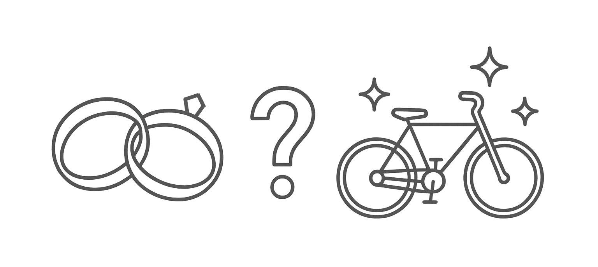

ADMINISTRAÇÃO
E
ECONOMIA
Aula
1
O subsistema de produção ou de operações pode ser entendido como aquele que transforma recursos e insumos em produtos.
No vídeo a seguir, o professor fala mais sobre esse assunto.
As atividades do subsistema de informações gerenciais foram se transformando ao longo do tempo...
A dimensão tecnológica está relacionada à infraestrutura de TI da organização:
É um tipo de software que integra os dados de toda a empresa. Ele organiza, gerencia e processa dados relativos a estoques, clientes, fornecedores e até funcionários. Os softwares de ERP (Enterprise Resource Planning) e os sistemas integrados de gestão (SIGs), desenvolvidos pela SAP e pela TOTVS são exemplos desse elemento.
Esse modo racional de tomar decisões ocorre de forma sequencial, uma característica marcante dos processos decisórios.
E as etapas dessa sequência serão sempre as mesmas, independentemente do grau de complexidade da situação problema que se quer resolver.
Ou seja, mesmo quando parece ser tomada por impulso, a decisão é consequência dos fatos acontecidos anteriormente que criaram suas bases.
O processo de decisão se inicia a partir da ocasião em que se percebe que há uma situação problema a ser resolvida. A partir daí busca-se compreender essa situação e tomar a decisão mais acertada, mais efetiva à disposição no momento.
Mas essa é apenas uma forma de se compreender processo. Há outros modelos conceituais que tratam os processos “desde o mais concreto e objetivo modelo, baseado no fluxo de materiais, até o modelo mais abstrato, que se fundamenta na mudança de estados de um sistema”.
Na tabela 01 é possível observar esses modelos e suas características.
| PROCESSO | EXEMPLO | CARACTERÍSTICAS |
|---|---|---|
| Fluxo de material | Processo de fabricação industrial |
|
| Fluxo de trabalho |
|
|
| Série de etapas | Modernização do parque industrial da empresa |
|
Você concluiu com sucesso a aula 1 do curso de Administração e Economia.
Continue se dedicando!